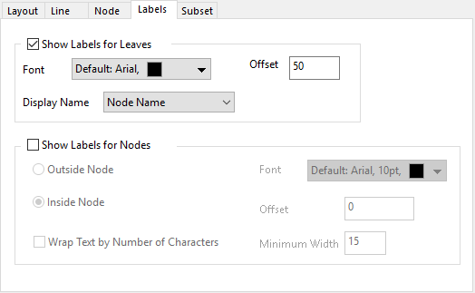

Diese Registerkarte kann verwendet werden, um die Beschriftungen für Blätter und Knoten in einem Diagramm für hierarchisches Edge Bundling zu steuern.

Legen Sie fest, ob Beschriftungen für Blätter gezeigt werden sollen und wie.
Legen Sie die Schriftart und das Anzeigeformat für die Beschriftungen fest. Neben dem Ändern der Schriftart können Sie mit dieser Bedienelementgruppe
Legen Sie den Versatz der Beschriftungen fest, von den Blattknoten ausgehend und entlang des Radius. Die Einheit dieses Bedienelements ist % der Schrifthöhe.
Legen Sie fest, was als Beschriftungen angezeigt werden soll. Sie können den Namen der Blattknoten oder den Text in einer Spalte auswählen.
Legen Sie fest, ob die Beschriftungen für die Knoten der Teildatensätze gezeigt werden sollen. Diese Gruppe ist nur verfügbar, wenn Knoten für Teildatensatz auf der Registerkarte Layout aktiviert wurde.
Legen Sie fest, ob die Titel außerhalb bzw. innerhalb der Knoten gezeigt werden sollen.
Legen Sie die Schriftart und das Anzeigeformat für die Knotenbeschriftungen fest. Diese Bedienelementgruppe ist die gleiche wie die Gruppe der Blattbeschriftungen.
Legen Sie den Versatz der Beschriftungen fest, von den Blattknoten ausgehend und entlang des Radius. Die Einheit dieses Bedienelements ist % der Schrifthöhe. Dieses Bedienelement ist nur verfügbar, wenn Position = Knoten außen.
Legen Sie fest, ob der Text umgebrochen werden soll, wenn der Text länger ist als die Anzahl der Zeichen, die im Feld Minimale Breite eingegeben ist.